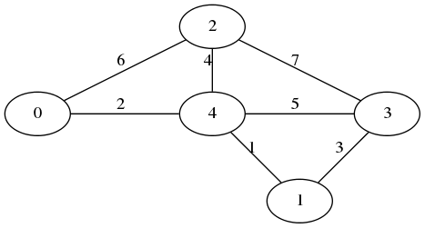
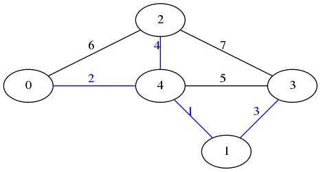

Σε αυτή την άσκηση πρέπει να γράψετε κώδικα που θα υπολογίζει το MST ενός γραφήματος.
Στο πρόγραμμα θα συμπληρώσετε την μέθοδο
mst
στην κλάση
Mst
στο πακέτο
gr.duth.ee.euclid.datastructures.graphmst
.
Το μέγεθος του γραφήματος σε κόμβους ανήκει στο κλειστό διάστημα [5, 100] και δεν χρειάζονται έλεγχοι για να διαπιστωθεί αν είναι όντως σε αυτό το διάστημα.
Για την αναπαράσταση του γραφήματος χρησιμοποιείτε υποχρεωτικά την
έτοιμη υλοποιημένη κλάση
WeightedGraph
στο πακέτο
gr.duth.ee.euclid.datastructures.graphmst
.
Για την αναπαράσταση του αποτελέσματος της εκτέλεσης του αλγορίθμου MST χρησιμοποιείτε υποχρεωτικά την ίδια κλάση
WeightedGraph
στο πακέτο
gr.duth.ee.euclid.datastructures.graphmst
.
Δεν επιτρέπεται οποιαδήποτε τροποποίησή του WeightedGraph, παρά μόνο κατά την
φάση της ανάπτυξης, αν είναι απαραίτητο για λόγους αποσφαλμάτωσης.
Κατά την υποβολή αξιολόγησης, πρέπει να χρησιμοποιηθεί η αρχική του
μορφή.
Η μέθοδος που πρέπει να υλοποιηθεί βρίσκεται μέσα στην κλάση Mst στο πακέτο
gr.duth.ee.euclid.datastructures.graphmst και είναι η:
public static WeightedGraph mst(WeightedGraph g)
Η μέθοδος αυτή πρέπει να υλοποιεί κάποιον αλγόριθμο εύρεσης MST και να επιστρέφει ένα κατάλληλα συμπληρωμένο αντικείμενο τύπου WeightedGraph.
Το γράφημα πάνω στο οποίο θα εκτελεστεί ο αλγόριθμος βρίσκεται αποθηκευμένος στην παράμετρο g.
Η μεταβλητή g ποτέ δεν θα είναι null και δεν χρειάζονται έλεγχοι για να διαπιστωθεί αν είναι όντως όχι null.
Έστω το γράφημα:

Εκτελώντας MST πάνω του λαμβάνουμε:

Το αποτέλεσμα της ετέλεσης του αλγορίθμου αναπαρίσταται με ένα αντικείμενο τύπου WeightedGraph
που περιέχει όλους τους κόμβους του αρχικού γραφήματος και μόνο τις κατάλληλες (μπλε) ακμές.
Αντιπροσωπεύει έναν μη-κατευθυνόμενο γράφο με αποστάσεις/βάρη.
Καλή επιτυχία!